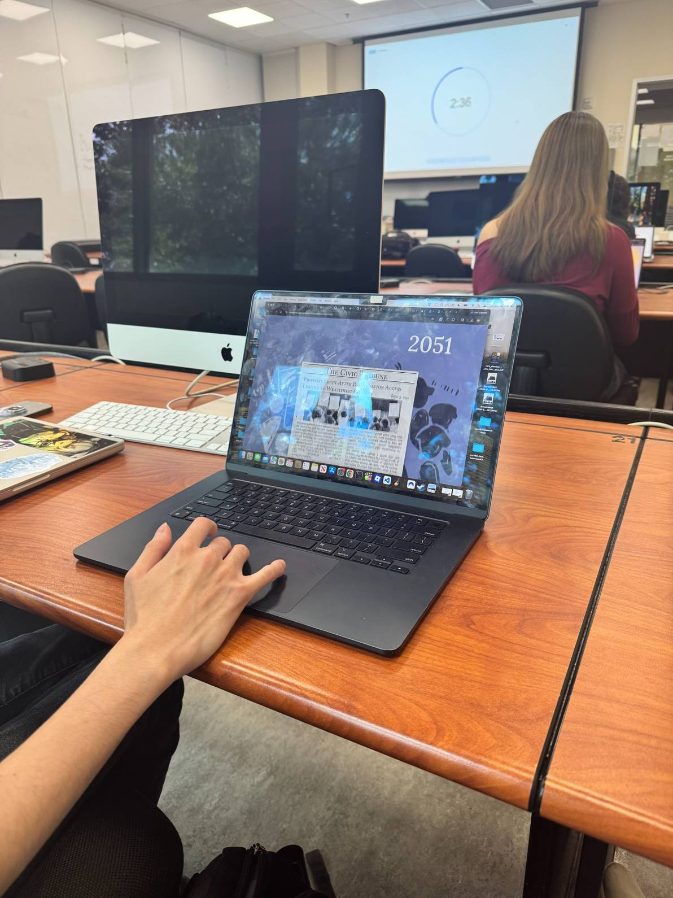
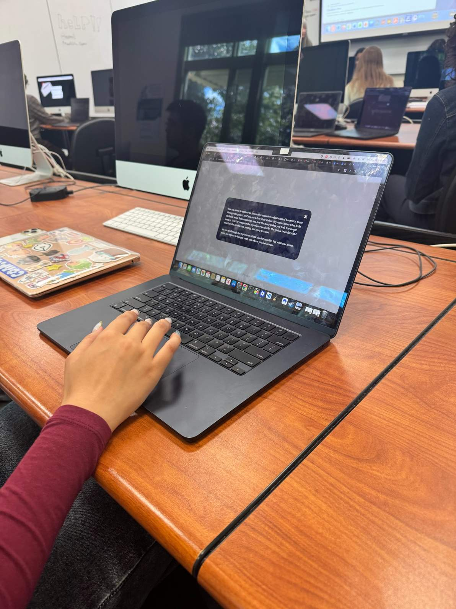
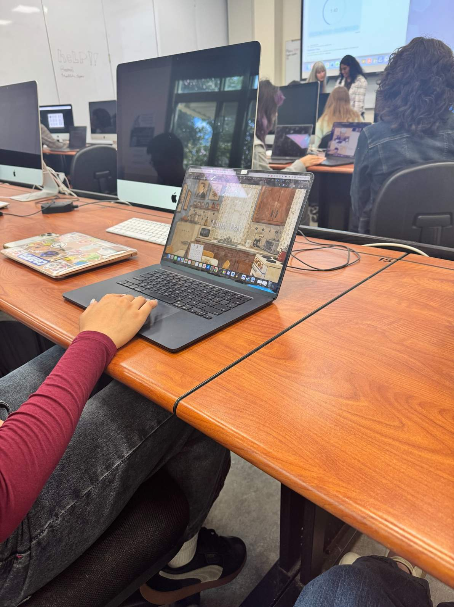
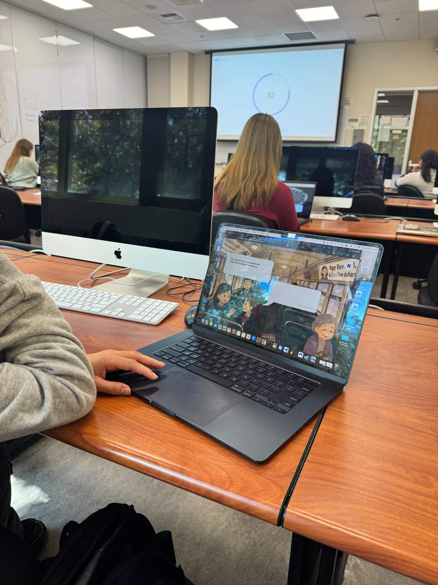
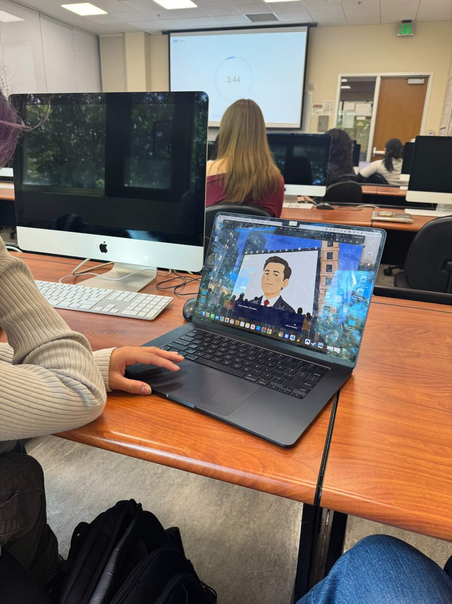

Usability Testing & Results
Testing Images





Significant Observations
1. The story was interesting and engaging.
When it came to the storytelling, the testers found the story overall interesting and engaging. The topic of the story was clear, and everyone got the gist of it even with the limited amount of time allowed for testing.
2. Some parts felt text heavy.
None of the users got to read all of the available text during testing. The pacing felt good overall, but some users felt it was text heavy and could use less dialogue at certain points.
3. The transitions between scenes were clear.
The transitions between the scenes were very clear with the added button text. During the phone scene, it took a second to understand what the blue text was, but once users read it, it became clear. The feeling that the character would have to save for a very long time was apparent.
4. Users wanted a stronger sense of progress.
I received feedback about progress scrolling, perhaps including a bar on the side to show where the user is in the story. I could also include a story guide to skip chapters and go back and forth between scenes.
What Needs to Be Improved
The project needs clearer interaction cues. The first “!” should have a click here indicator to make it clear that users are no longer scrolling, but now clicking for things to happen.
There also needs to be a clearer indicator that clicking will allow users to see the rest of the text if they do not want to wait for the typing animation to finish. I am thinking of having the text say “click to see full text” while the typing animation is going on, then change back to “click to continue” once the text is finished.
The scroll instruction on the beginning screen is also a bit too small. One of the testers did not see it at first, so I should increase the size of that font to make it more obvious.
Navigation and Interaction
Users can generally figure out how to navigate and interact with the project. However, there are still moments where the project needs to be more direct about what is clickable and what the user should do next.
Adding a progress bar or story guide would give users a frame of reference for where they are in the story. Even without this, the project still feels immersive, but the added guide would make the experience clearer.
Overall Message
The concept of longevity and living forever came across clearly. However, the question “who wants to live forever?” makes it seem like this technology is available to everyone.
The story frames life extending technology as something only the president and the elite have access to. Because of this, I am going to change the question to something more pointed, such as “who gets to live forever?”
Plan for Updates
- Possibly add a clearer click indicator to the first “!” interaction. (only one user struggled with this)
- Add a progress bar or story guide to show where the user is in the story.
- Make the beginning scroll instruction larger and easier to notice.
- Change the typing animation instruction to say “click to see full text.”
- Possibly reduce some dialogue heavy moments to improve pacing.
- Change the main question to something akin to “who gets to live forever?”